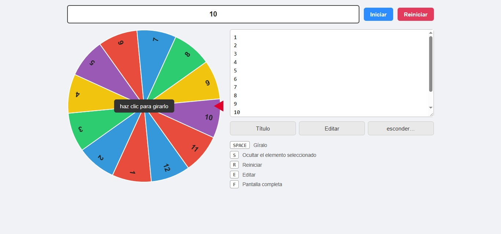
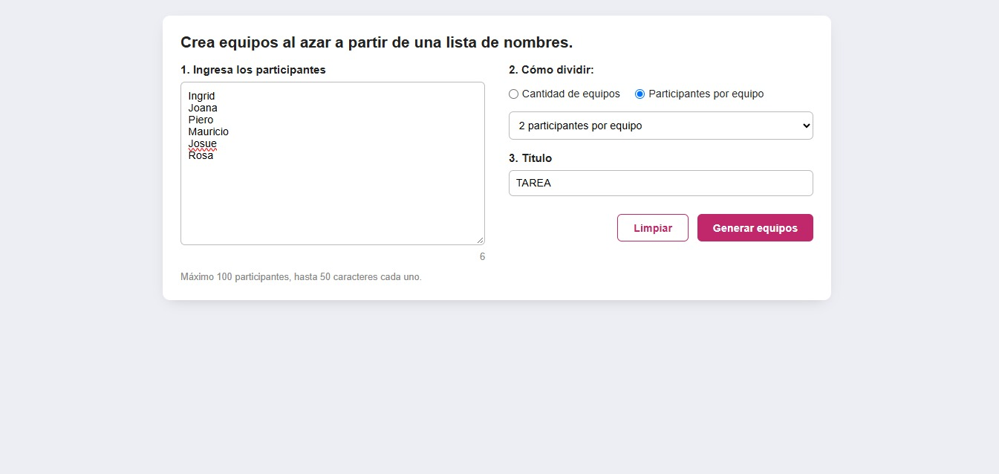
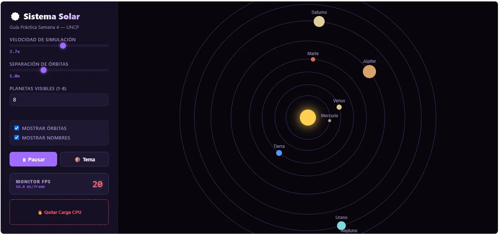

Bitácora de Aprendizaje ·
Temas tratados
Fundamentos de JavaScript vanilla (sin librerías), manipulación interactiva del DOM, captura de eventos de teclado, persistencia de datos local con localStorage y renderizado gráfico con la API de Canvas.
¿Qué aprendí?
- Manipulación del DOM y Eventos: control dinámico de elementos de la interfaz mediante JavaScript puro y captura de eventos globales del teclado y ratón.
- Gráficos e Interacción con Canvas API: dibujo dinámico por código (sectores circulares, agujas indicadoras y animaciones de giro aleatorio).
- Persistencia de Datos Local: uso de localStorage para almacenar la información de las sesiones del usuario y evitar la pérdida de datos al recargar la página.
Laboratorio / Práctica
- Práctica Individual: ruleta giratoria interactiva con sectores multicolores, aceleración aleatoria, controles por teclado (SPACE/click), pantalla completa y persistencia en localStorage.
- Práctica Grupal: aplicación web para sorteo aleatorio de equipos a partir de un listado de hasta 100 participantes mediante el algoritmo Fisher-Yates, con opción de exportación a JPG y portapapeles.
Herramientas y Validaciones
- JavaScript Vanilla y Canvas API.
- DevTools de Google Chrome.
- VS Code y GitHub.
Evidencias


